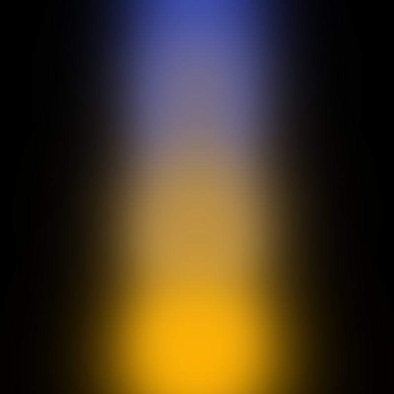

Differentiable
Reverse-mode autograd covers projection, compositing, spherical harmonics, and camera parameters.
Ruby gem · v1.0.0
Render, differentiate, and train Gaussian scenes without leaving CRuby. A portable reference path and native OpenMP kernels share the same API.

3.2+CRuby
3DGS + 2DGSrendering
Ruby + Cbackends
Apache 2.0license
Use the Ruby backend to inspect the math. Switch to the packaged native extension when the same work needs more speed.
Reverse-mode autograd covers projection, compositing, spherical harmonics, and camera parameters.
Pinhole, orthographic, equidistant fisheye, and OpenCV-distorted cameras use one rendering surface.
Adam, SelectiveAdam, densification, MCMC strategy, COLMAP input, checkpoints, and PLY output.
The API follows familiar gsplat conventions while using Numo::NArray values throughout.
See the full examplerequire "gsplat"
rendered, alphas, meta = Gsplat.rasterization(
means: means,
quats: quats,
scales: scales,
opacities: opacities,
colors: colors,
viewmats: viewmats,
ks: intrinsics,
width: 512,
height: 512
)
rendered.backward(gradient)Requires CRuby 3.2 or newer. The native extension is packaged with the gem; OpenMP is optional.
gem install gsplat